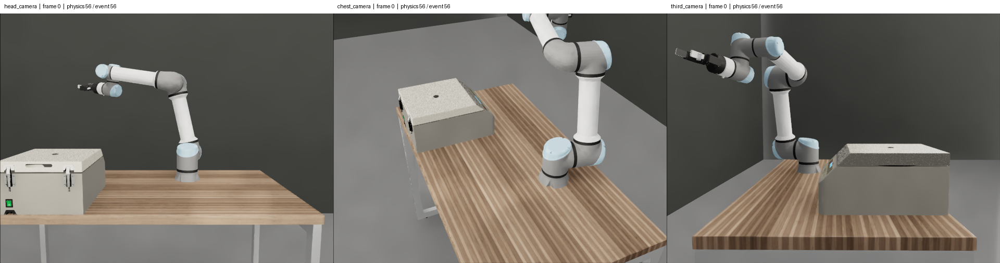
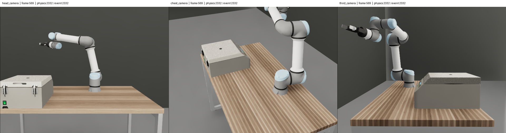

<!doctype html><html lang="zh-CN"><meta charset="utf-8"><meta name="viewport" content="width=device-width,initial-scale=1"><title>力峰最高条抽帧</title><style>body{margin:2rem auto;max-width:1160px;padding:0 1rem;color:#18282b;font:16px/1.6 system-ui}h1,h2{line-height:1.25}section{padding:1rem 0;border-top:1px solid #bac6c9}.views{display:grid;grid-template-columns:repeat(auto-fit,minmax(215px,1fr));gap:.75rem}figure{margin:.3rem 0}img,video{width:100%;height:auto}a{color:#155e65}figcaption{font-weight:600}</style><main><a href="index.html">返回抽查页</a><h1>力峰最高条 · 回合 077</h1><p>从左到右为头部、胸部、第三视角。两帧分别对应开录与结束的同一物理步。</p><figure id="opening"><figcaption>开录帧 · 相机帧 0 · 物理步 56 · 距事件 +0.00 ms</figcaption><a href="highest-opening.png"></a></figure><figure id="end"><figcaption>末帧 · 相机帧 569 · 物理步 2332 · 距事件 +0.00 ms</figcaption><a href="highest-end.png"></a></figure></main></html>